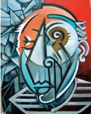

Kübizm, yirminci yüzyılın başlarının muhtemelen en önemli sanat akımıydı. İnsanların ve şeylerin şekillerini basit geometrik şekillere indirgedi ve matematiksel perspektif kurallarını reddetti. Böyle yaparak, bir izleyicinin iki boyutlu bir yüzey üzerinde boşluğu ve hacmi anlama biçimine meydan okudu.

Kübizmin köklerinin sert, açısal kenar çizgilerini doğal formlara veren ve onları eş zamanlı olarak farklı bakış açılarından tasvir eden Paul Cezanne’ın son dönem eserlerine dek izi sürülebilir. 1907’de Pablo Picasso, resmin dışındaki bir adamı işaret eden, bir genelevdeki dört fahişenin resmi olan Les Demoiselles d’Avignon’da Cezanne’ın yaklaşımını ilerletti. Kadınlar, arka fondaki keskin açıları tamamlayan geometrik bedenlere sahiptiler. Gölgeler, keyfî düşüyordu ve kadınların bedenleri belli bir mesafeden düzenli bir şekilde küçülmüyordu. Ön planı arka plana düşürterek Picasso, izleyicinin resmin düzlüğünün tam olarak farkında olmasını sağladı.
Arkadaşı sanatçı Georges Braque’ın da katılımıyla Picasso, kübizmin ilkelerini daha da ileriye götürdü. Akımın adı, Braque’ın “küçük küplerle” sanat yarattığını sanat eleştirmeni Louis Vauxcelles’e anlatan Henri Matisse tarafından bulundu. Karşılığında Vauxcelles, Braque’ın eserlerini “kübik tuhaflıklar” olarak yorumladı.
1908 civarından 1912’ye kadar süren kübizmin ilk fazına ‘analitik kübizm’ denir. Bu fazda iki sanatçı öncelikle, keyfî gölgeler resmederek ve neredeyse tüm renkleri ortadan kaldırarak, perspektif kuralları ile oynayarak bilinen formları yıkmakla ilgilendiler. Görseller soyut görünmesine rağmen, doğadaki bir şeyle, genelde bir insan figürü veya bir natürmort ile ilişkilendirilebilir. Bu dönemin tipik bir kompozisyonu, Braque’ın Portekizli’sidir (1911).
1912 civarında Braque, tuvalleri üzerine gazete kâğıtları ve duvar kâğıtlarından parçalar yapıştırmaya başladı. Böylelikle akımın ikinci fazı (sentetik kübizm), sentetik malzemelerin resimlere eklenmesine doğru evrildi. Örneğin Picasso’nun Hasır İskemleli Natürmort (1911-1912) resminde balmumundan bir parça, resmin arka fonu olması için hasır iskemle model ile birlikte basılır ve gerçek bir ip, tüm kompozisyonu çerçeveler.
1914’te I. Dünya Savaşı’nın başlangıcıyla beraber kübizm akımı, temelde bitti; ama resmin geleneksel ilkelerinin kökten reddi, ardından gelen tüm modern sanatçılara bir ilhamdı.
EK BİLGİLER:
1. Kübizmin sonraki formları, kübist-fütürizmi, sadelikçiliği, orfizmi ve keskinlikçiliği içine alır.
2. Amerikalı sanatçılar Stuart Davis ve Aaron Douglas, kübizmden kuvvetli bir şekilde etkilendi.
3. Braque ve Picasso, kübist dönemleri boyunca tekrar ve tekrar aynı motifleri resmettiler. Aralarında en yaygın olanları, müzikal çalgılar, şişeler, sürahiler, bardaklar, gazeteler ve büyük harflerdir.